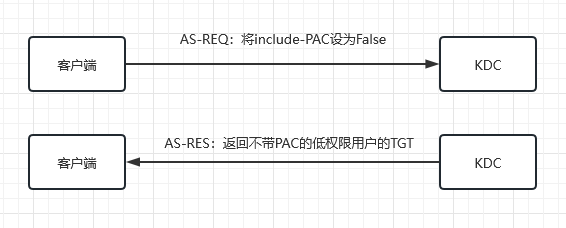
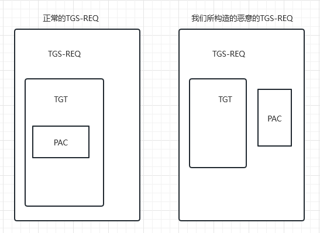
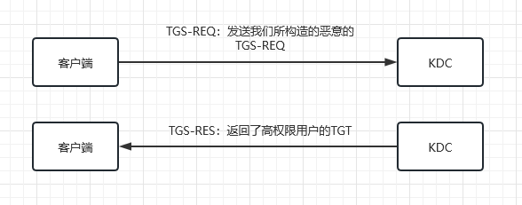

内网渗透之ms14_068和黄金、白银票据
MS14-068
MS14-068 是微软在 2014 年 11 月发布的一个安全公告,其中提到了 Windows 操作系统中存在的一个漏洞,对应的补丁号是KB3011780.该漏洞被称为 Kerberos Checksum Vulnerability,允许攻击者通过伪造 Kerberos 协议包来获取域控制器的权限,从而可能导致整个 Active Directory 域受到攻击.
该漏洞影响 Windows Server 2003、Windows Vista、Windows Server 2008、Windows 7 和 Windows Server 2008 R2 等多个版本的 Windows 操作系统,并被评定为危急级别.
原理
在学习这个漏洞之前我们要先明白kerberos协议的认证流程：

在kerberos最初的设计流程中只说明了如何证明客户端的真实身份,并没有说明客户端是否有权限访问这个服务,为了解决这个问题,微软引入了PAC（Privilege Attribute Certificate）用来辨明用户的身份和权限.
PAC 包含了用户身份信息（包括用户的用户名、域名、SID（Security Identifier）等）、授权信息（包括用户所属的组别以及每个组别对应的 SID 和权限,用于判断用户是否具有相应的访问权限）、签名信息（用于验证 PAC 的完整性和真实性,防止篡改和伪造攻击）和其他辅助信息,
在 Kerberos 认证中,PAC数字签名包含两部分：PAC 签名和票据签名.
-
PAC 签名：用于验证 PAC 中携带的用户安全属性信息是否被篡改或伪造.在
生成 TGT时,KDC（Key Distribution Center）会使用其krbtgt服务账户的密码哈希对 PAC 进行数字签名,并将签名结果添加到 TGT 中.在后续的服务请求中,TGS（Ticket Granting Service）会获取 PAC,并利用 KDC 的公钥来验证 PAC 签名的真实性. -
票据签名：用于验证票据是否被篡改或伪造.在
生成 TGS 票据时,TGS 使用服务账户的密码哈希对票据进行数字签名,并将签名结果添加到 TGS 标志中.在服务端接收到客户端请求时,会提取 TGS 票据中的票据签名,并利用服务账户的公钥来验证票据的真实性.
作为一名低权限用户,如果我们想要访问高权限用户才能访问的服务,我们只需要获取到高权限用户的TGT就可以了,而通过MS14-068这个漏洞我们就可以获取到高权限用户的TGT
原理：
客户端在发起认证请求时,通过设置include-PAC为False,则返回TGT中不会包含PAC

此时我们可以构造一个新的PAC,这个PAC里的User SID 和 Group SID都是高权限用户的User SID 和 Group SID而PAC尾部的签名则是使用将前面的data（User SID & Group SID）进行MD5加密得到MD5值作为签名,这里就是微软的第一个错误：
在KDC机构对PAC进行验证时,对于PAC尾部的签名算法,虽然原理上规定必须是带有Key的签名算法才可以,但微软在实现上,却允许任意签名算法,只要客户端指定任意签名算法,KDC服务器就会使用指定的算法进行签名验证.
同时我们在客户端生成一个随机数subkey,用这个随机数对PAC进行加密,这个subkey会被放到TGS_REQ的Authenticator中,同时我们要发送的TGS_REQ中还包含低权限用户的TGT和我们之前构造的PAC,但这个PAC并不在TGT里面而是在外面

此时发送我们所构造的恶意的TGS-REQ,这里微软犯了第二个错：
PAC没有被放在TGT中,而是放在了TGS_REQ数据包的其它地方.但可笑的是,KDC在实现上竟然允许这样的构造,也就是说,KDC能够正确解析出没有放在其它地方的PAC信息.
意味着我们所构造的PAC是可以被解析的,配合微软的第三个错：
KDC验证缺少PAC的TGT成功后,再验证不在TGT中 的PAC的合法性.如果2个均验证成功,KDC把PAC中的User SID、Group SID取出来,重新使用进行签名,签名算法和密钥与设置inclue-pac标志位为TRUE时一模一样.将将新产生的PAC加入到解密后的TGT中,再重新加密制作全新的TGT发送给Client,不是TGS
最后就会返回一个高权限用户的TGT

到这里我们就已经将原理分析清楚了,接下来谈谈它的利用
利用
首先下载MS14-068.exe
查看补丁信息
1 | wmic qfe get Caption,Description,HotFixID,InstalledOn |
得到当前用户的sid
1 | whoami /user |
使用MS14-068.exe
1 | MS14-068.exe -u <userName>@<domainName> -p <clearPassword> -s <userSid> -d <domainControlerAddr> |
成功以后会生成一个ccache文件
使用mimikatz
1 | kerberos::purge#清除原有票据 |
详细的漏洞复现网上有一大堆,可以参考这篇文章：MS14-068域提权漏洞复现
更详细的原理分析可以参考：ms14-068的深入分析
黄金票据
黄金票据（Golden Ticket）指黑客通过窃取Kerberos域控制器（KDC）的krbtgt帐号的密码哈希值,生成伪造的票据（TGT）来获取对整个Kerberos领域的完全访问权限的过程.这种攻击方式被称为“黄金”票据,因为它赋予了攻击者类似于使用黄金密钥一样的特权来绕过Kerberos的身份验证和授权机制,从而可以自由地访问所有资源,并且很难被检测到和防止.
由于TGT部分是利用krbtgt帐号的密码哈希来加密的,KDC验证TGT是否有效也是用krbtgt帐号的密码哈希来解密,如果我们知道了krbtgt帐号的密码哈希,就可以自己伪造一个TGT了,而一般要得到krbtgt的密码哈希都是通过域控来拿的,所以黄金票据适合用来做权限维持
利用条件：域名、域的sid、域的KRBTGT账户NTLM密码哈希、伪造对象用户名
获取域名：
1 | whoami |
获取sid：
1 | whoami /all |
获取域的KRBTGT账户NTLM密码哈希或者aes-256值
1 | lsadump::dcsync /domain:xx.com /user:krbtgt /csv |
查看域管理员用户名
1 | net group "domain admins" /domain |
使用mimikatz
1 | klist purge |
白银票据
白银票据（Silver Ticket）指黑客通过窃取目标主机上的服务账号的密码哈希值,生成伪造的服务票据（ST）来获取对该主机上特定服务的访问权限.这种攻击方式被称为“白银”票据,因为它不像“黄金”票据那样具有完全的控制权限,只能用于访问特定的服务,并且难以被检测到和防止.
与TGT类似,ST（Service Ticket）通过服务账户的密码哈希进行加密,如果我们知道了对应服务账户的密码哈希,我们就可以伪造该相关服务的ST,从而访问到该服务
实操可参考：白银票据（Silver Ticket）攻击